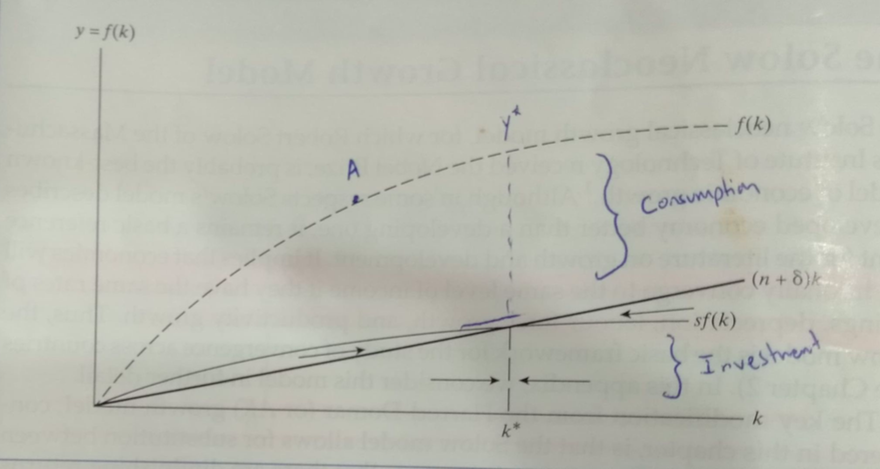

Research example
Indonesian Economic Growth from 1990- 2019 and the Solow Growth Model.
Background
Indonesia has had average GDP growth of 5.11% from 1990-2019 despite experiencing a severe contraction during the AFC. Growth rates are not returning to their trend of 6.9% during the period between 1990-1997, with a ‘new normal’ of 5.3% emerging. According to the WB, Indonesia is the 16th largest economy in the world and projected to become the 4th largest economy in 2050 (Hawksworth, 2017). Growth has been consistent but it has been below government targets and WB data shows inequality has risen by 30% since 2000, with the gini coefficient in 2019 being 0.39. Growth is supported by strong growth in investment, exports and domestic consumption.
WB data asserts Indonesia has the world’s 4th largest population, over 270m citizens and a labour force of 136m. The median age is 29.7, slightly less than SEA’s, and more than 10 years younger than OECD nations. Urbanisation continues at around 2% pa with over 56% of the population now located in urban areas. HDI increased due to significant increases in health and education outcomes alongside growth.
HDI Trends
Indonesia has large natural resource endowments and exports are dominated by mineral fuels and various commodities, low-value added manufacturing and primary products with an increasing and diversifying service sector (albeit still largely consists of tourism). The main export markets now being the USA, SEA, and EU.
Democratisation, market liberalisation, decentralisation of governance, taxation changes, large scale infrastructure investment and development of human capital through the MDG/SDG have created the potential of turning Indonesia into a world economic power within a generation. However, internal seperatist movements and terrorism continue to simmer. Environmental degradation, particularly underutilisation of domestically available renewable resources in favour of expansion of coal, deforestation, overfishing and weak subnational governments are challenges to growth that needed to be addressed.
Relevance to Solow Swan Growth Model
The Solow Swan growth model is exogenous and includes a national production function in the Cobb-Douglas form which allows for microeconomic extrapolation and where the elasticity of substitution must equal 1.
Y = F(K,AH) = Kα(AH)1-α
Output (Y) is a function of capital (K), human capital (H) and labour augmenting technological progress (A), determined exogenously. H is the labour force and acquired skills approximated by years of education. Increases in A will increase the number of effective labour units due to increasing productivity. Alpha ( α) represents the percentage contribution of capital to output growth and t indicates a specific time as time is continuous in the model. The production function has diminishing returns to capital and labour.
Capital Accumulation is dependent upon savings (which is equal to investment in the model) being larger than the amount of capital depreciation and widening in order to increase capital stock.
Δk = sf(k) - (δ + n + g)k
Where:
Savings =sY = sf(k) Investment =i = sf(k) Output = Y = C + I Output/worker =
y=c+i
Effective labour increase = g
Which allows for the determination of the steady state expression where
y*(t) = hA(t)( sf(k) )α/1-αδ+n+g
Where n is the growth rate of the labour force, g is the growth rate of effective labour units and δ is depreciation. It can be seen in this equation that countries can increase output by having a high rate of savings and therefore Investment (sf(k)), a large proportion of time is spent learning skills (h) and increasing human capital, the population growth rate is small and has high technological development (A).)
This shows that at the steady state savings/investment is equal to the amount needed to retain the steady state level of capital despite depreciation and capital widening. k* is a stable equilibrium.
Indonesia is at point A on the production function. Consumption and savings are increasing, with investment increasing capital accumulation well above the break even point. However, internal factors have made it relatively impossible for the country to proceed towards its steady state in a smooth and timely manner.
Depreciation consists of a weighted average of capital types and their respective depreciation rates. As a large proportion of investment has been in the form of buildings, depreciation would be less than if it was invested in more productive resources. Population growth is still outpacing its regional neighbours but it is slowing, reaching 1.1% in 2019 - a good sign for capital accumulation per worker growth in the future. Education rates are increasing, further increasing output in Indonesia.
In the model increasing savings increases equilibrium output per person but does not affect the equilibrium rate of growth. However cross national data suggest that if savings is increased it could raise the growth rate for many decades (Romer 1992).
Empirical studies suggest that TFP had a negative impact during 1990-1997, but from 1998 has had a positive growth. Capital and human capital per worker have continuously experienced positive growth and therefore are the main contributors of economic growth in Indonesia. Further, studies suggest that capital and labour contribute approximately 60% and 40% respectively of output per worker, with human capital providing a greater contribution than physical capital and TFP. The relative lack of importance in TFP in Indonesia when compared to SEA or other middle income countries suggest not enough has been done to promote productivity increases within the economy.
Development Process - Strategies and Policies
The Asian Financial Crisis caused a strong economic contraction in Indonesia. CPI exploded, the value of the $IDR plummeted, capital outflows were being exacerbated by a precipitous drop in FDI and government debt ran over 100% of GDP.
Indonesia democratised in 1998 and pursued a political, social and economic liberalisation program - albeit from a very nationalist conservative baseline. Recapitalisation of the banking industry and a growth in islamic finance created a shallow but relatively robust system which withstood the GFC.
Urbanisation and industrialisation bring labour from the agricultural sector into more productive sectors, but not all sectors are created equally. Post AFC manufacturing growth slowed and approximately two thirds of labour leaving the agriculture sector transitioned to the low end service sector (Rajah 2018). This pools many workers into a stagnant sector causing economic legacy effects in addition to increasing racial and class tension due to the creation of a permanent service class.
While investment is higher post GFC than in the period before, capital is experiencing increasingly diminishing returns and labour is being drawn into low productivity jobs.
Further, a shift away from commodity based activity post GFC has left existing capital stock less productive. It became apparent the ‘new normal’ growth level of around 5% GDP would not be enough to meet growth objectives. In 2014 a new government headed by Jokowi was elected and began widespread fiscal reform, infrastructure development and improving the business climate in order to increase investment.
Jokowi inherited an economy experiencing slower growth, a widening CAD and a fiscal deficit approaching the debt ceiling established after the AFC. The centrepiece of the fiscal reforms by Jokowi was scrapping the domestic fuel subsidy which accounted for 14% of total public expenditure in 2014 but dropped to around 3% in 2017. Electricity subsidies accounted for 7% of public spending in 2015 had been halved by 2016 (Rajah 2018). Further, the creation of a single registry of poor households allowed for more efficient targeting of subsidies in general. Following OECD recommendations, the funding saved was largely redirected into higher social and infrastructure spending.
The subsidy reform, more credible budgeting, particularly in the sub-national governments where rent seeking is higher and a low govt debt ratio of around 30% GDP led to Indonesia's credit rating increasing to investment grade or higher. Similarly Indonesia emerged as a middle income country and the OECD has changed to a country led development program in line with its increased capabilities and strength in institutions.
Indonesia performs very low on quality of infrastructure, particularly transport infrastructure (World Bank Data, 2019). This is a severe impediment to economic convergence between regions. The centrepiece of Jokowi's administration is a $ 468.5 billion ‘Master Plan’ indonesia's economic development via increases in infrastructure investment spending and to provide a plan for Indonesia to go up the global value chain.The plan will focus on increasing infrastructure and investment by large scale cash outlays, tax reform legislation, and strengthening Indonesia's IPR regime, while increasing enforcement of laws on eliminating corruption and legal uncertainty.
Indonesia has taken several initiatives to improve the investment climate for the private sector. General corruption, legal uncertainty, inefficient customs services and non-transparent and arbitrary tax administrations have reduced the country's competitiveness in the investment climate. Further, inflexible labour markets have further reduced Indonesia's comparative advantage in labour-intensive manufacturing. The quality of education varies widely relative to other middle income countries and increasing education rates as well as health outcomes (MDG goals of poverty reduction have been met but stunting and maternal death rates remain high) will increase human capital and make the labour pool more suitable for productive industries. Movement away from a food self sufficiency paradigm to a food security one would be helpful as in 2019 over 20% of the population remains vulnerable to poverty and food insecurity.
Thailand and Malaysia have higher TFP growth than Indonesia, and that these countries have lower physical and human capital growth from Indonesia but have higher economic growth, we can conclude that TFP plays a vital role in economic growth and Indonesia needs to focus on increasing its TFP (Cheng 2017). Investment in infrastructure and human capital will lead to TFP increases due to spillover and externality effects however increasing foreign direct investment which generally leads to strong productivity gains would be preferable. WB data showing a 2% average FDI in Indonesia is significantly lower than its regional neighbours.
Conclusions
Indonesia has retained steady growth despite recently unfavourable global commodity markets due to its strong consumer demand and quality policy choices.
Diminishing returns to capital have led Indonesia to change trajectory from a capital led growth strategy to a ‘big push’ towards increasing productivity primarily through infrastructure growth, strengthening the investment climate and increasingly credible governance. Continuing economic development will be difficult considering the many and varied stakeholders which will resist structural change. Being well endowed with natural resources and politically inexperienced Indonesia has avoided the commodity trap in its development journey and is well placed to experience further sophisticated growth given the policy groundwork 2014 onwards if Indonesia can increase its TFP.
Bibliography
- Dobbs,Retal. 2012. The archipelago economy: Unleashing Indonesia's Potential.Mckinsey Global Institute.
- Cheng, K et al. Understanding Indonesia's Economic Growth, 2017.
- Hawksworth, J. 2017. The Long View: How will the world look in 2050 PWC.
- Indonesia Country Overview.WorldBank.
- Indonesia - Inequalities in Human Development in the 21st Century,2019. Human Development Report, UNDP.
- Rajah,R.2018.Indonesia'sEconomy:BetweenGrowthandStability.TheLowy Institute.
- Ray, D, 1995, ‘Beyond Total Factor Productivity: Issues in Indonesia's Technological Development,’EconomicsandFinanceIndonesia,vol.43no2
- Rommer, D. et al “A contribution to the empirics of economic growth” Quarterly Journal of Economics 107 (1992): 407-437
- Smith, S & Todaro, M. Economic Development, 13th edition. Pearson, UK
- World Bank Data.